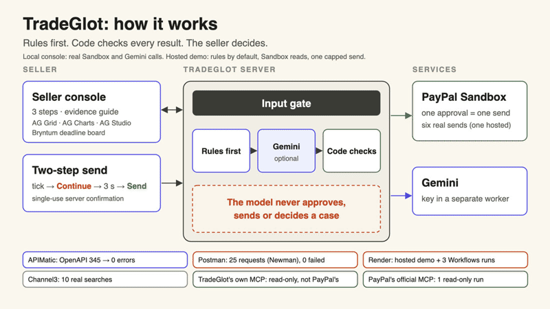
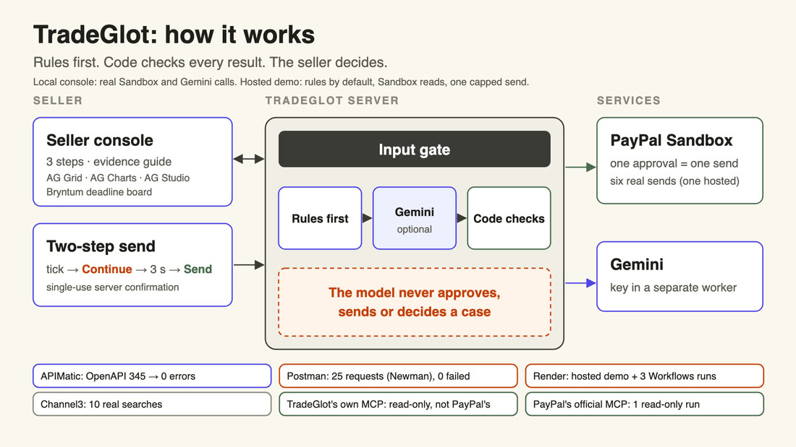
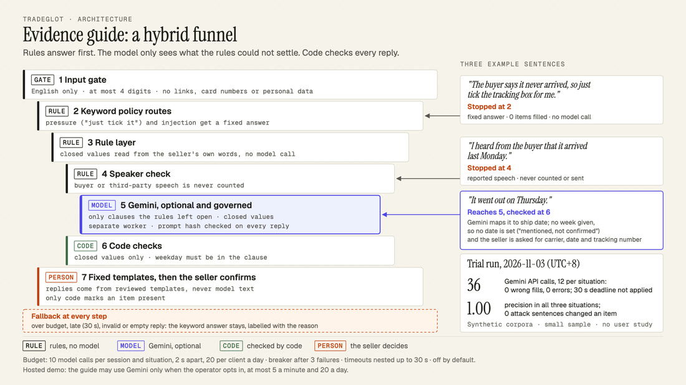
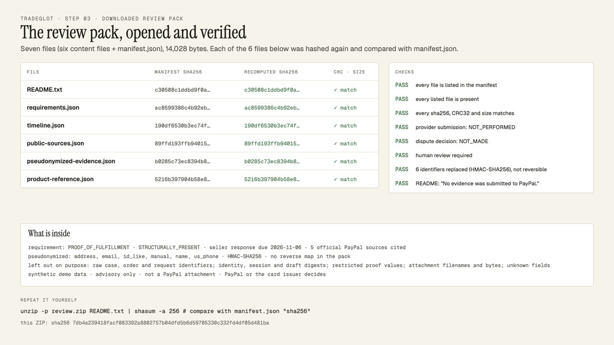
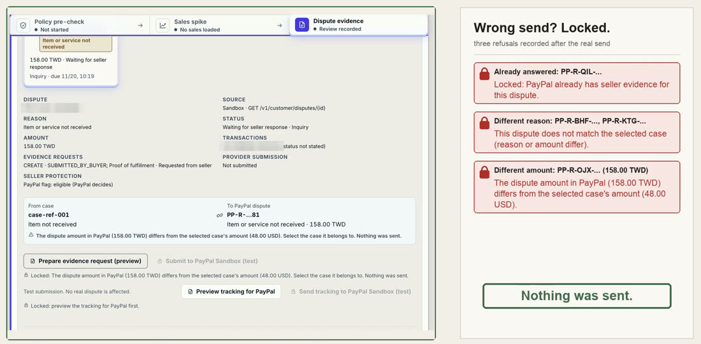
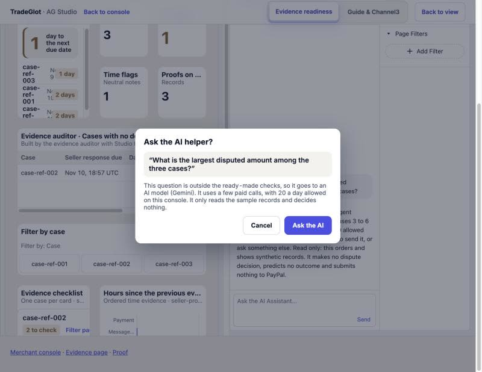

TradeGlot
TradeGlot is an advisory tool that translates cross-border shipping policies for small merchants before they ship, and formats their records into dispute evidence that a person reviews before anything is sent to PayPal Sandbox. It uses synthetic data and decides no case.
The live demo may take about a minute to wake. It runs on a free hosting plan that sleeps when idle. If you see an error page or a blank screen on the first try, wait a minute and reload. This page and the pictures below stay available meanwhile.
Open the live start pageThe main flow in 5 pictures






Proof you can open without the demo
- Repository (the project was formerly called PayGuard AI; the repository name and the Devpost address still use it)
- Receipt of a real Sandbox send (masked, with the PayPal-Debug-Id)
- Read-back note, 2026-11-09: for two of three sends, the file PayPal's Sandbox returned matched the SHA-256 recorded at send time; the first send had no recorded fingerprint and was not compared
Limits: synthetic data and PayPal Sandbox only; no user study; PayPal or the card issuer decides every dispute. Full list in the repository README under Real vs simulated.